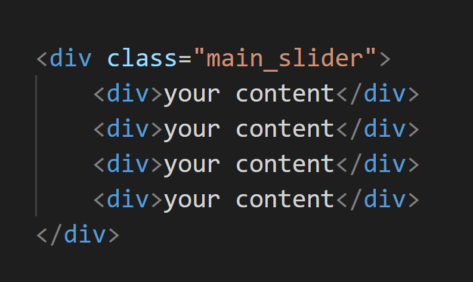
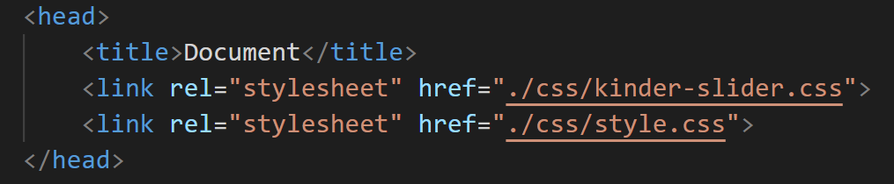
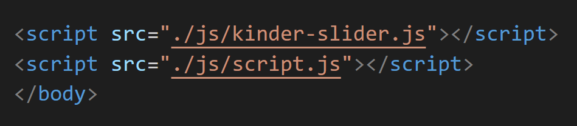

A kinder slider than you might have found before.
1. Create the HTML where the slider should be.
2. Add kinder-slider.css in your tag "head".
Add the new style.css if you want to change the default style.
3. Add kinder-slider.js before your closing tag "body".
Add script.js in the same place if you want to change the default settings.
4. Congratulations, you can fill the slider with content and change its settings!
| Name | What is it? | Default value | Possible values |
| slidesWidth | The width of your slide in px | 600 | your number |
| slidesHeight | The height of your slide in px | 400 | your number |
| nav | Show navigation | false | true/false |
| autoplay | Turn on and off autoplay | false | true/false |
| autoplaySpeed | Autoplay speed in milliseconds | 2000 | your number |
| slides | Number of slides displayed simultaneously | 2 | your number |
| loop | Turn on and off an infinite loop | false | true/false |
| dots | Show dot indicators | false | true/false |